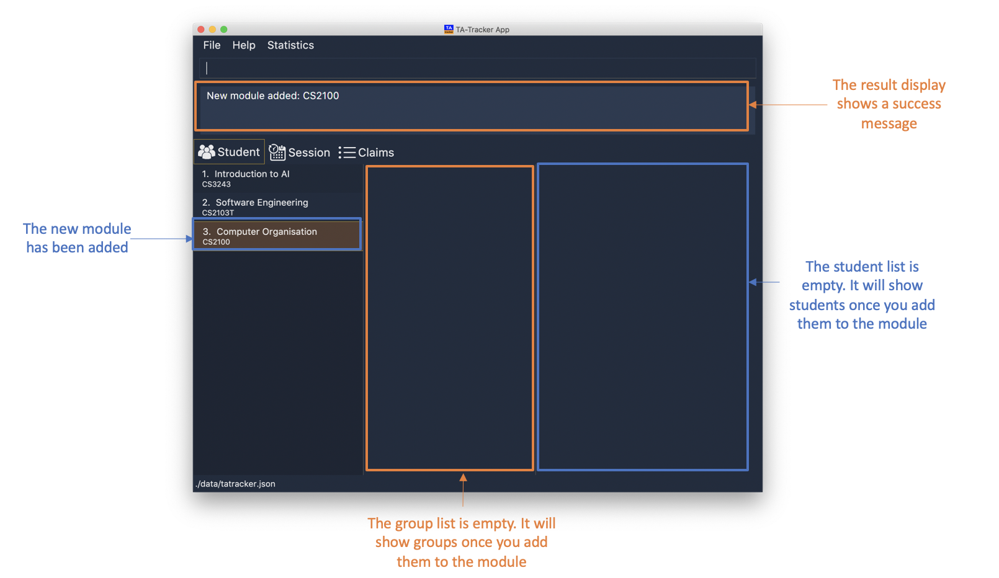
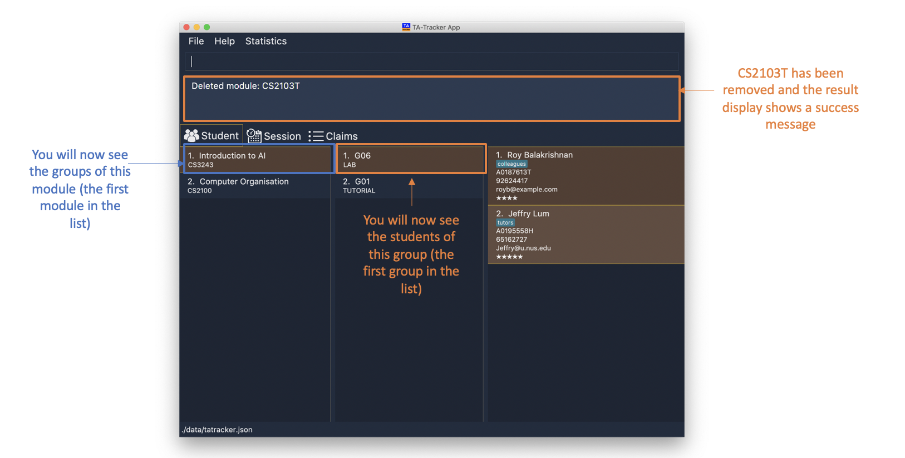
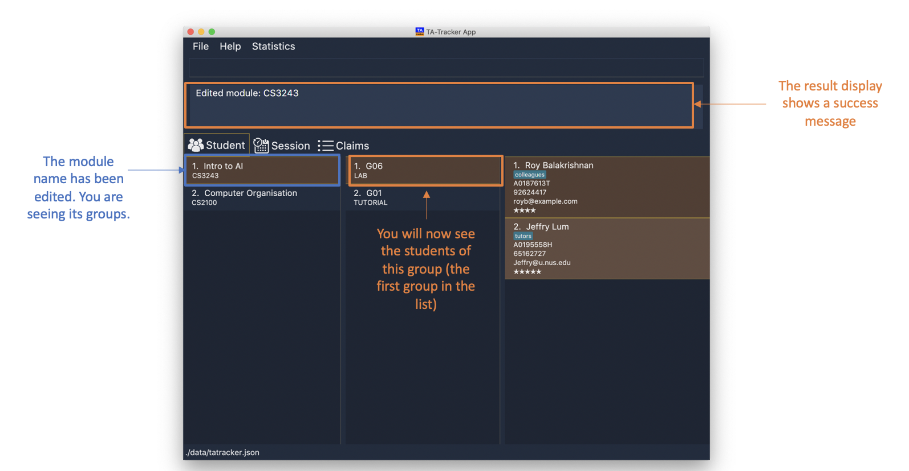
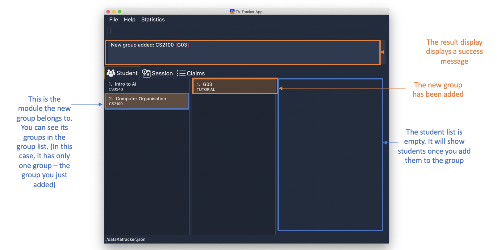
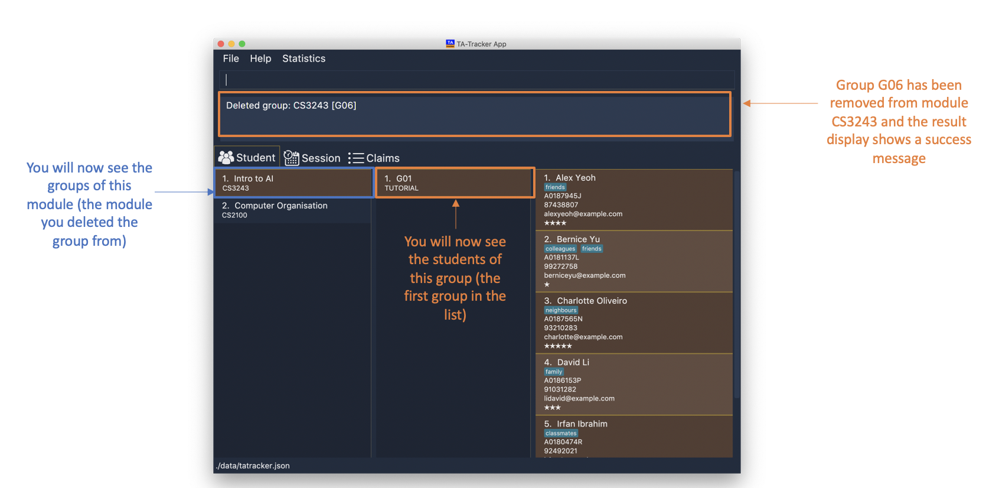
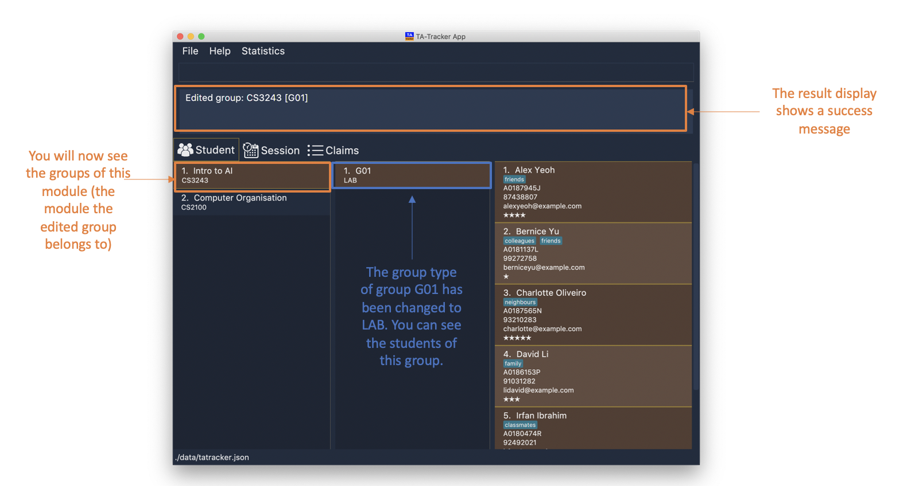
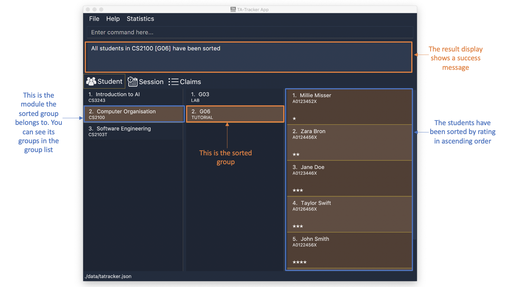
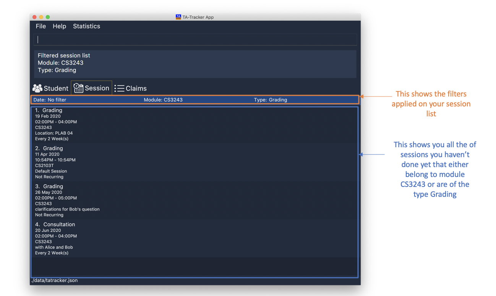
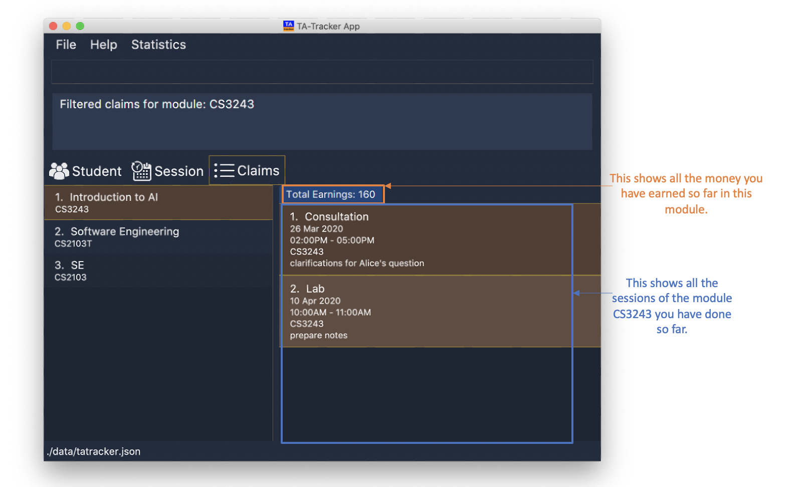

By: Team W17-4 Since: Jan 2020 Licence: MIT
- 1. Introduction
- 2. About the User Guide
- 3. Usage
- 4. Commands
- 4.1. Navigation
- 4.2. Student View
- 4.2.1. Adding a Module :
module add - 4.2.2. Deleting a Module :
module delete - 4.2.3. Editing a Module :
module edit - 4.2.4. Adding a Group :
group add - 4.2.5. Deleting a Group :
group delete - 4.2.6. Editing a Group :
group edit - 4.2.7. Adding a Student :
student add - 4.2.8. Deleting a Student :
student delete - 4.2.9. Editing a Student :
student edit - 4.2.10. Sorting a Group :
sort group - 4.2.11. Sorting a Module :
sort module - 4.2.12. Sorting Everything :
sort all - 4.2.13. Filter :
filter
- 4.2.1. Adding a Module :
- 4.3. Session View
- 4.4. Claims View
- 5. FAQ
1. Introduction
Are you a Teaching Assistant in NUS School of Computing (NUS SOC) who is tired of having to fill out the Teaching Support Student (TSS) Claims Form accurately at the end of the semester?
Do you wish there was a desktop application that can help you keep track of your teaching duties, such as your claimable hours and student ratings, all in one place?
Look no further, because TA-Tracker is the tool just for you!
No more saving your claimable hours in an unappealing spreadsheet.
No more keeping notes about your students in a cluttered diary.
TA-Tracker is a productivity tool that is made for all you NUS SOC Teaching Assistants (TAs) who need to easily fill out forms, such as the TSS Claims Form, at the end of the semester.
TA-Tracker has features that will help you easily track and manage your claimable hours and students in one place.
What’s more, TA-Tracker has:
-
A Command Line Interface (CLI) for all you TAs who can type fast and prefer to use a keyboard, and
-
A Graphical User Interface (GUI) so that you can easily view all your teaching duties.
If you are interested, jump to [Quick Start] to discover how easy it is to fill out forms using TA-Tracker. == Quick Start
This section gives you a step-by-step explanation on how you can download and open the application.
-
Ensure that you have Java
11or above installed in your Computer. -
Download the latest
tatracker.jarhere. -
Copy the file to the folder you want to use as the home folder for your TA tracker.
-
Double-click the file to start the app. The GUI should appear in a few seconds.

This is how the GUI may look like when the TA-Tracker is opened.
-
Type a command in the command box, and press Enter to execute it.
e.g. typinghelpand pressing Enter will open the help window.This diagram explains what a
Result DisplayandCommand Boxare. -
Refer to Section 3, “Usage” for details of each command.
| TA-Tracker data is saved periodically so you don’t have to worry about saving your data manually. |
2. About the User Guide
This User Guide introduces you to TA-Tracker’s features and shows you how you can use the TA-Tracker to make your life as a Teaching Assistant easier.
2.1. Common Symbols
This section shows you the symbols commonly used in this guide.
|
This symbol indicates that there is something that you should take note of. |
|
This symbol indicates that a tip is being mentioned. |
|
This symbol indicates that there is something you should be careful to avoid. |
2.2. Command Format
This section shows you how all the commands in this guide have been formatted.
| Format | Meaning | Example |
|---|---|---|
Any lower case letters, followed by a forward slash |
These are prefixes. They are used to separate the different parameters of a command. |
These are prefixes: Note that prefixes cannot have spaces: |
Words in upper case |
These are parameters. You will need to supply parameters in order to complete certain commands. |
You can create a student with the name John Doe using the Suppose the Simply replace |
Words in upper case, surrounded by square brackets |
These are optional parameters. Certain commands can be used without these parameters. |
Suppose a command contains two parameters next to each other: The first parameter Since a
|
An ellipsis |
These are parameters that can be used multiple times or none at all. |
The following parameter can be used multiple times: This means that it can be:
|
2.3. Common Parameters
This section lists and explains what the parameters commonly used in the commands mean.
| Parameter | Explanation | Examples |
|---|---|---|
|
This refers to the different |
student - to indicate the Student View session - to indicate the Session View claims - to indicate the Claims View |
|
Indicates the position of an item in a list |
1 - refers to the first item in a list |
|
Refers to the unique code given to the module. You can personalise this and give it your own code. However, we recommend you use the module’s official code. |
CS2103T |
|
Refers to the unique code given to the group. You can personalise this and create your own code. However, we recommend that you use the group’s official code assigned by SoC |
G06 |
|
Refers to the new group code of a group when you edit a group. |
G05 |
|
Refers to the group type. |
lab, tutorial, recitation or other |
|
Refers to the new group type you want a group to be. |
lab, tutorial, recitation or other |
|
Refers to the matriculation number of a student. It must start with an A, have 7 numbers in between and end with an alphabet. |
A0123456X |
|
Depending on the command, this could either refer to the student’s name or the module’s name. |
John Doe or Software Engineering |
|
Refers to how you want to sort the Student View. |
alpha, alphabetical or alphabetically - to sort alphabetically. rating asc - to sort by rating in ascending order. rating desc - to sort by rating in descending order. matric - to sort by matriculation number. |
|
Refers to the type of session. |
consult - consultation tutorial - tutorial lab - lab grading - grading assignments, projects or assessments prep - class preparation todo - other tasks and notes |
|
Refers to any extra description |
This time was spent correcting 40 assignments |
|
Indicates the starting time. Must be in the |
10:42 |
|
Indicates the ending time. Must be in the |
16:42 |
|
Indicates the date of a session. Must be in the |
2020-06-20 |
|
Indicates the recurring period of a session. |
1 - represents a session that repeats every week. |
|
Indicates the rating of a student. A rating is as a number between 1 (Poor) to 5 (Excellent). |
3 - represents an average student rating. |
|
Indicates the email of a student. Emails should be in The
The The domain name must also:
|
johnDoe97@example123.com |
2.3.1. Duplicate Parameters
You can specify the same parameter more than once in a command. Depending on the command, you will see different outcomes.
Here is a table explaining the different outcomes:
| Parameter | Explanation | Example |
|---|---|---|
Can be used multiple times |
All occurrences will be used when executing the command |
In the Therefore, you can input multiple tags by chaining them: This will give a student the tags |
Can only be used once |
The very last occurrence will be used when executing the command |
If you execute this command, you will create a module with the name The name |
2.3.2. Rearranging Parameters
Parameters can be in any order if they have prefixes.
For example, if a command needs a n/NAME and p/PHONE_NUMBER, you can specify them in any order:
-
n/NAME p/PHONE_NUMBER, or -
p/PHONE_NUMBER n/NAME
However, if the command has a parameter without a prefix, that parameter must be the very first parameter.
For example, if a command needs an INDEX, it must be the first parameter:
-
INDEX n/NAMEis valid, but -
n/NAME INDEXis invalid == Layout This section gives you a brief overview of the layout of the TA-Tracker.
TA-Tracker is divided into three tabs representing the different Views:
-
The Student View under the
student tab, -
The Session View under the
session tab, and -
The Claims View under the
claims tab
When you switch to a tab, that tab will be highlighted in orange.
Furthermore, when you enter a new command, you will be automatically switched to the relevant tab
so that you can instantly see the result of the command.
This shows what happens when you last made a change in the |
2.4. Student View
Under the student tab, the Student View is used to show you the students that you’re teaching. The students
have been grouped according to the module and group they belong to. The Student View has been divided into
three columns.
-
The first column shows you a list of all the modules that you are a teaching assistant for.
-
The second column shows you a list of all groups that you’re a teaching assistant for in a module of your choice. If you haven’t chosen anything, you will be shown the groups of the module in the first index in the list of modules by default.
-
The third column shows you a list of all students in the group of your choice. If you haven’t chosen anything, you will be shown the students of the group in the first index in the list of groups by default.
The purpose of the Student View is to help you keep track a of your students. It will show you information such as:
-
NAME: student name -
MATRIC_NUMBER: matriculation number -
RATING: ratings you have given the student, represented by stars (on a scale from 1 - 5) -
EMAILandPHONE: contact details -
TAG: any additional information you have about the student
|
The |
This is an example of what the Student View might look like.
=== Session View
Under the session tab, the Session View contains a list of the upcoming sessions
that you haven’t done yet.
The sessions are automatically sorted by date.
The purpose of the Session View is to help you keep track a of your upcoming teaching. duties. It will show you information such as:
-
SESSION_TYPE: the type of session -
DATE: the date that the session will occur on -
STARTandEND: the start time and end time of the session -
MODULE: the module that the session is under -
NOTES: any additional information -
WEEK: the recurring period of the session
This is an example of what the Session View might look like.
=== Claims View
Under the claims tab, the Claims View contains a list of all the claimable teaching
duties you have completed so far.
The purpose of this view is to allow a you to keep track of all your claims so you can easily enter it into the TSS claims form at the end of the semester.
The Claims View has been divided into two columns.
-
The first column shows you a list of all the modules that you are a teaching assistant for.
-
The second column shows you a list of all the sessions that you have marked as done.
This is an example of what the Claims View might look like.
3. Usage
This section describes how you can interact with TA-Tracker.
3.1. Keyboard Shortcuts
You can navigate everything in TA-Tracker with just a keyboard!
Here are some keyboard shortcuts that you can use:
| Shortcut Key | Usages |
|---|---|
Esc |
|
|
|
|
|
3.2. Syntax Highlighting
When you type a command into the command box, your input will be highlighted.
Here is a table explaining the meaning of each colour:
| Colour | Meaning |
|---|---|
green |
Valid input. |
red |
Invalid input. |
white |
The default font colour. |
This is an example of a valid input.
This is an example on an invalid input.
3.3. Hints
When you type out a command, you will also see hints about how to use the command.
Here is a table describing the different types of hints that you will encounter:
| Hint | Trigger |
|---|---|
Showing the command usage |
|
Showing the parameter usage |
|
This is an example of what a hint may look like.
4. Commands
This section explains how to use all the CLI commands in TA-Tracker.
4.1. Navigation
These commands are used to control the different windows in TA-Tracker,
as well as switching between the different Views.
==== Viewing help : help
You can open the help window with this command. You can close the help window
by pressing the ESC key
on your keyboard.
Format: help
This is what the help window looks like.
==== Switching tabs : goto
You can switch to different tabs with this command to show their associated view.
Format: goto TAB_NAME
|
Example:
goto student
This command takes you to the student tab.
4.1.1. Exiting the program : exit
You can exit the program with this command.
Format: exit
==== Listing all sessions : list
list command shows you all the sessions under Session View and Claims View.
|
4.2. Student View
This section explains all the commands you can use in the Student View.
4.2.1. Adding a Module : module add
You can use this command to add a new module to the TA-Tracker.
When a new module is created, the Student View will show the groups
and students of the new module. (Initially, a new module doesn’t have any students or
groups till you add some).
If you were on a different tab, you will automatically be switched to the student tab.
Format: module add m/MOD_CODE n/NAME
|
|
Examples:
-
module add m/CS2100 n/Computer OrganisationThis will add a module with the module code
CS2100and nameComputer Organisationto the TA-Tracker.
4.2.2. Deleting a Module : module delete
You can use this command to delete a module from the TA-Tracker.
When you delete a module, all groups, students and sessions associated with the module will also be deleted.
When a module is deleted, the Student View will go back to its default
setting. That is, you will see the details of the first group in the first module of
the TA-Tracker.
If you were on a different tab, you will automatically be switched to the student tab.
Format: module delete m/MOD_CODE
|
Examples:
-
module delete m/CS2103TThis will delete the module with the module code
CS2103Tfrom the TA-Tracker.
4.2.3. Editing a Module : module edit
You can use this command to edit a module’s name in the TA-Tracker.
When a module is edited, the Student View will show the groups of the edited module and
the students of the first group of the edited module. If you were on a different tab,
you will automatically be switched to the student tab.
Format: module edit m/MOD_CODE n/NEW NAME
|
Examples:
-
module edit m/CS3243 n/Intro to AIThis will change the name of the module with module code
CS3243toIntro to AI.
4.2.4. Adding a Group : group add
You can use this command to add a group to the TA-Tracker.
When a new group is created, the Student View will show the groups of the module
this new group belongs to and students of the new group.
If you were on a different tab, you will automatically be switched to the student tab.
Format: group add g/GROUP_CODE m/MOD_CODE t/GROUP_TYPE
|
Examples:
-
group add g/G03 m/CS2100 t/tutorialThis will add a group with the group code
G03, which is atutorial, inside the module that has module codeCS2100.
4.2.5. Deleting a Group : group delete
You can use this command to delete a group from the TA-Tracker.
When a group is deleted from the TA-Tracker, all students in the group are also deleted.
When a group is deleted, the Student View will show the details of the first group
of the module the group was deleted from.
If you were on a different tab, you will automatically be switched to the student tab.
Format: group delete g/GROUP_CODE m/MOD_CODE
|
Examples:
-
group delete g/G06 m/CS3243This will delete the group with the group code
G06from the module that has module codeCS3243.
4.2.6. Editing a Group : group edit
You can use this command to edit a group in the TA-Tracker.
This command can be used to change the group code and the group type of the group. The students inside the group will remain intact.
When a group is edited, the Student View will show the groups in the module that
the edited group belongs to, as well as the students that belong to the edited group.
If you were on a different tab, you will automatically be switched to the student tab.
Format: group edit g/GROUP_CODE m/MOD_CODE [ng/NEW_GROUP_CODE] [nt/NEW_GROUP_TYPE]
|
Examples:
-
group edit g/G01 m/CS3243 nt/labThis will change the group type of the group with group code
G01, inside the module with module codeCS3243, to be alab.
4.2.7. Adding a Student : student add
You can use this command to add a new student to the TA-Tracker.
When a new student is added, the Student View will show that the new student
is added into the student list of the provided module group.
If you were on a different tab, you will automatically be switched to the student tab.
Format: student add id/MATRIC_NUMBER n/NAME m/MOD_CODE g/GROUP_CODE
[e/EMAIL] [r/RATING] [t/TAG]
|
Examples:
-
student add id/A0123456J n/Alice m/CS2100 g/G03This will add a student named Alice with the matriculation number
A0123456Jinside groupG03of the moduleCS2100.
|
4.2.8. Deleting a Student : student delete
You can use this command to delete a student from the TA-Tracker.
When a student is removed, the Student View will show that the student
is removed from the student list of the provided module group.
You will see an empty list if there are no more students inside the module group.
If you were on a different tab, you will automatically be switched to the student tab.
Format: student delete id/MATRIC_NUMBER g/GROUP_CODE m/MOD_CODE
|
Examples:
-
student delete m/CS3243 g/G01 id/A0187945JDeletes the student with the matriculation number
A0187945Jfrom groupG01of the moduleCS3243.
4.2.9. Editing a Student : student edit
You can use this command to edit a student in the TA-Tracker.
When a student is edited, the Student View will show that the student has been
edited in the student list of the provided module group.
If you were on a different tab, you will automatically be switched to the student tab.
Format: student edit id/MATRIC_NUMBER m/MOD_CODE g/GROUP_CODE
[n/NAME] [e/EMAIL] [r/RATING] [t/TAG]
|
|
Examples:
-
student edit id/A0181137L g/G01 m/CS3243 p/91234567 e/bernie@example.com r/4Edits the student with the matriculation number
A0181137Lfrom groupG01of moduleCS3243to have:-
The new rating of
4 -
The new phone number
91234567 -
The new email address
bernie@example.com
-
-
student edit m/CS3243 g/G01 id/A0186153P t/Edits student with the matriculation number
A0186153Pto have:-
All existing tags removed
-
4.2.10. Sorting a Group : sort group
You can use this command to chose how you want to sort your students in a specific group.
The students will be sorted according to your specified SORT_TYPE.
The Student View will show you the students inside the group that you have sorted.
If you were on a different tab, you will automatically be switched to the student tab.
Format: sort group g/GROUP_CODE m/MOD_CODE t/SORT_TYPE
|
Examples:
-
sort group g/G01 m/CS3243 t/rating ascSorts the student inside
G01of moduleCS3242byrating asc(that is, rating in ascending order).
4.2.11. Sorting a Module : sort module
You can use this command to chose how you want to sort your students in a specific module.
The students will be sorted according to your specified SORT_TYPE.
The Student View will show you the students inside the first group of the module
that you have sorted. If you want to see the other groups, you can use the student filter
command (details given below in 5.2.13.)
If you were on a different tab, you will automatically be switched to the student tab.
Format: sort module m/MOD_CODE t/SORT_TYPE
|
Examples:
-
sort module m/CS2103 t/alphaSorts all students inside all groups inside the module
CS2103alphabetically.
4.2.12. Sorting Everything : sort all
You can use this command to chose how you want to sort all of your students.
The students will be sorted according to your specified SORT_TYPE.
The Student View will show you the students inside the first group of the first module
in the TA-Tracker. If you want to see the other groups or modules, you can use the student filter
command (details given below in 5.2.13.)
If you were on a different tab, you will automatically be switched to the student tab.
Format: sort all t/SORT_TYPE
|
Examples:
-
sort all t/alphaSorts all students in all groups inside all modules
alphabetically.
4.2.13. Filter : filter
You can use this command to see the students in a particular group and module.
You can filter the students in Student View in the following ways:
You will see the group with the specified GROUP_CODE and the module with the specified
MOD_CODE highlighted in orange in the list.
If you were on a different tab, you will automatically be switched to the student tab.
Format: student filter m/MOD_CODE [g/GROUP_CODE]
|
Examples:
-
student filter m/cs2100 g/g03This will show you all students in module
CS2100, under groupG03.
If you use just the module code, you will see:
-
The first group of the module specified by the given module code highlighted in orange
-
All the students belonging to that group
-
You can use this command when you want to see all the groups belonging to a particular module.
Format: student filter m/MOD_CODE
Examples:
-
student filter m/cs3243This shows you the students in the first group of the module
CS3243
|
Keywords are case-insensitive. e.g. |
4.3. Session View
This section explains the different commands that can be used in the Session View.
4.3.1. Adding a Session : session add
You can use this command to add a new session.
The new session will be shown in the Session View, and will automatically
be marked as not done.
If you were on a different tab, you will automatically be switched to the session tab.
Format: session add m/MOD_CODE [s/START] [e/END] [d/DATE] [w/WEEKS] [t/SESSION_TYPE] [n/NOTES]
|
Examples:
-
session add m/CS3243 s/14:00 e/16:00 d/2020-06-20 w/2 t/consultation n/with Alice and BobAdds a new session with:
-
START_TIMEat 14:00 in24hrformat -
END_TIMEat 16:00 in24hrformat -
DATEon 2020-06-20 inyyyy-MM-ddformat -
WEEKrecurring period of 2 weeks: Once this session has been marked as done, a new session will be created withDATE d/2020-07-04(2 weeks later from the date of the original session) -
MOD_CODEof CS3243 -
TYPEconsultation -
NOTE"with Alice and Bob"
-
4.3.2. Deleting a Session : session delete
You can use this command to delete a session at a specific index.
If you were on a different tab, you will automatically be switched to the session tab.
Format: session delete INDEX
|
Do not confuse the |
Examples:
-
session delete 1This command deletes the first session in the Session View.
4.3.3. Editing a Session : session edit
You can use this command to edit a session in the TA-Tracker.
If you were on a different tab, you will automatically be switched to the session tab.
Format: session edit INDEX [s/START_TIME] [e/END_TIME] [d/DATE] [w/RECUR]
[m/MODULE] [t/SESSION_TYPE] [n/NOTES]
|
Examples:
-
session edit 1 s/14:00 e/16:00 d/2020-02-19 t/grading n/Location: PLAB 04Edits the session at index 1 to have:
-
The new
START_TIMEat 14:00 -
The new
END_TIMEat 16:00 -
The new
DATEon 2020-02-19 inyyyy-MM-ddformat -
The new
TYPEgrading -
The new
NOTE"Location: PLAB04"
-
4.3.4. Marking a Session as Done : session done
You can use this command to mark a session as done.
The session marked as done will be removed from the Session View and will automatically appear as a new claim in the Claims View. If the session marked done has a recurring period, a new session with the updated date and timing will be added to Session View.
If you were on a different tab, you will automatically be switched to the claims tab.
Format: session done INDEX
Marks the session with the given unique index as done.
Examples:
-
session done 2
This will mark the 2nd session in the Session View as done.
4.3.5. Filter : filter
You can use this command to filter the sessions in the Session View.
You can filter the sessions in the following ways:
-
MOD_CODE- filtering by module code will show you only the sessions affiliated with that module. -
SESSION_TYPE- filtering by session type will show you only the sessions with the specified type -
DATE- filtering by a date will show you only the sessions on that date.
The keyword is case-insensitive.
When you execute a new filter command, any previous filters applied on the sessions will be removed and only the filters from the latest command will be applied on the sessions list. The filters that are currently being applied are shown at the top of the Session View
If you were on a different tab, you will automatically be switched to the session tab.
Format: session filter [m/MOD_CODE] [t/SESSION_TYPE] [d/DATE]
Example:
-
session filter m/CS3243All sessions in the Session View with module code
CS3243are displayed. -
session filter m/CS3243 t/tutorialAll sessions in the Session View with module code
CS2103T, or session typeTutorialwill be shown. -
session filter m/CS3243All sessions in the Session View with module code
CS2103Twill be shown.
|
As long as a session contains one of the keyword given by the user, the session will be shown to the user. |
4.4. Claims View
4.4.1. Filter : filter
You can use this command to filters sessions in the Claims View by the module code.
You will see the module with the specified MOD_CODE highlighted in orange in the list.
All completed sessions with matching MOD_CODE are displayed. Keyword is case-insensitive.
Format: claims filter m/MOD_CODE
Example:
-
claims filter m/CS3243All sessions in the Claims View with module code
CS3243are displayed.
4.4.2. Changing the hourly rate : setrate
Sets the hourly rate for the total income and claim computation.
Format: setrate RATE
|
Examples:
-
setrate 25Sets the current hourly rate to $25. === Statistics Window
4.4.3. Generate Statistic Report : report
You can use this command to generate a report to display information such as:
-
A breakdown and summary of completed sessions
-
The number of hours of each type of completed sessions
-
A breakdown of your student’s ratings
Optionally, you can specify a module code. If a module code is specified, the report generated will only include data from the specified module.
Pressing the esc key on your keyboard will close the statistics window.
Format: report [MOD_CODE]
|
Example:
-
reportGenerate and display a report of sessions and students from all modules.
-
report CS2103TGenerate and display a report of sessions and students from the module CS3243. == Glossary
| Term | Explanation | Examples |
|---|---|---|
TSS Claims Form |
This refers the claims form that Teaching Assistants at NUS School of Computing have to fill up at the end of each semester to claim money for the tasks they have completed. |
|
TA |
This is the short form for `Teaching Assistant. |
|
SOC or SoC |
This is the short form for School of Computing. |
|
CLI |
This is the short form for Command Line Interface. It processes commands to TA-Tracker in the form of lines of text |
|
GUI |
This is the short form for Graphical User Interface. It is a form of user interface that allows users to interact with electronic devices through graphical icons |
|
Index |
This refers to the position of an item on a list. |
Index of 1 refers to the first item in a list. |
Matric Number |
This refers to a student’s matriculation number. |
A0123456X |
Group |
The is the general term given to a group of students a TA teaches. |
lab , tutorial , recitation |
TAT |
This is the short form of TA-Tracker. |
|
NUS |
This is the short form of National Univeristy of Singapore. |
|
Module |
Refers to one of the academic courses in NUS. |
|
Tutorial |
A tutorial is a regular meeting between a tutor and one or several students, for discussion of a subject that is being studied. |
5. FAQ
Q: How can I transfer my data to another Computer?
A: You can do so by first installing the app in another computer. You can then replace
the empty data file it creates with the data file of your previous TA-Tracker folder.
== Command Summary
5.1. Navigation
-
View Help:
help -
Switch Tabs:
goto TAB_NAME -
Exit the Program:
exit
5.2. Student View
5.2.1. Module commands
-
Add Module:
module add m/MOD_CODE n/NAME -
Edit Module:
module edit m/MOD_CODE n/NEW NAME -
Delete Module:
module delete m/MOD_CODE
5.2.2. Group commands
-
Add Group:
group add g/GROUP_CODE m/MOD_CODE t/GROUP_TYPE -
Edit Group:
group edit g/GROUP_CODE m/MOD_CODE [ng/NEW_GROUP_CODE] [nt/NEW_GROUP_TYPE] -
Delete Group:
group delete g/GROUP_CODE m/MOD_CODE
5.2.3. Student commands
-
Add Student:
student add id/MATRIC_NUMBER n/NAME m/MOD_CODE g/GROUP_CODE [e/EMAIL] [r/RATING] [t/TAG] -
Delete Student:
student delete id/MATRIC_NUMBER m/MOD_CODE g/GROUP_CODE -
Edit Student:
student edit id/MATRIC_NUMBER m/MOD_CODE g/GROUP_CODE [n/NAME] [e/EMAIL] [r/RATING] [t/TAG]
5.2.4. Others
-
Sort Group:
sort group g/GROUP_CODE m/MOD_CODE t/SORT_TYPE -
Sort Module:
sort module m/MOD_CODE t/SORT_TYPE -
Sort All Modules:
sort all t/SORT_TYPE -
Filter Students:
student filter m/MOD_CODE [g/GROUP_CODE]
5.3. Session View
5.3.1. Session commands
-
Add Session:
session add m/MOD_CODE [s/START] [e/END] [d/DATE] [w/WEEK] [t/SESSION_TYPE] [n/NOTES] -
Delete Session:
session delete INDEX -
Edit Session:
session edit INDEX [s/START_TIME] [e/END_TIME] [d/DATE] [w/RECUR] [m/MODULE] [t/SESSION_TYPE] [n/NOTES] -
Done Session:
session done INDEX
5.3.2. Others
-
Filter Sessions:
session filter [d/DATE] [m/MOD_CODE] [t/SESSION_TYPE]
5.4. Claims View
-
Set Rate:
setrate RATE -
Filter Claims:
claims filter m/MOD_CODE
5.5. Statistics
-
Generate Statistics Report:
report [MOD_CODE]